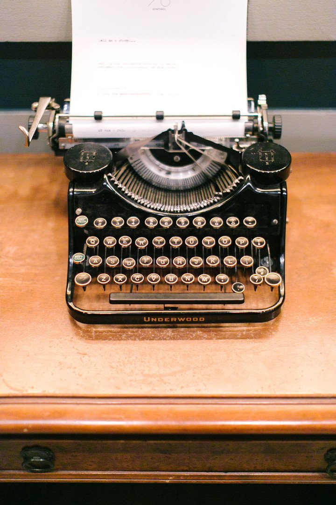
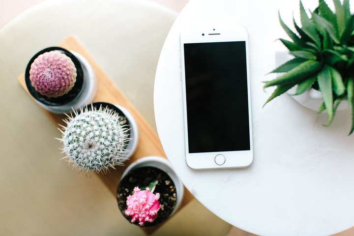

4 Quick Tips To Getting Digitally Organized
Staying digitally organized is just as important as being physically organized. Its just easier to neglect because its ‘out of sight, out of mind’. Are you one of those people who have 100’s of unread emails, papers bursting out of our mail holder, or you can never remember your online passwords or usernames? Don't fret thats most people nowadays, but there are some ways to simplify your digital world! This weeks blog post will outline 4 tips to getting digitally organized.
#1.Forgot your password?:
How many time have you had to reset your online password or username because you can’t remember?! I know, you’re probably thinking, “just keep it all of the same!”. Well, mine used to be, but with heightened online security features nowadays, online passwords have a lot more ‘requirements’. I also keep track of my husbands online information, so I have double the amount of work. Anytime you sign up for a new subscription/member area, write down all your usernames & passwords on your phone. This will save you time and the brain power from having to remember by heart, let alone having to constantly reset them. Be sure to password protect your phone and keep them in a safe and secure spot. In fact, there are apps that you can purchase to help manage your passwords if you’d like to go that route.

#2. Create on-going lists:
Life is busy & organization is key to streamlining and simplifying your day-to-day. Imagine your entire day and all of your personal & professional responsibilities, I’m sure the list is long! I keep ongoing lists on my phone of the following three categories: reminders, to-do’s and groceries. Reminders are simple tasks like, ‘make hair appointment, put letter in mailbox, etc’. To-do’s are my daily tasks that need to be completed within that day & grocery is pretty self explanatory. Whenever I’m on the go or something just pops in my mind, I immediately put in my phone under the appropriate category. That way when I have to stop by Costco or the grocery store I have a pretty clear understanding of what I need verses having to do a rushed audit of what I need; same goes for other lists.
#3. Update your phone address book:
After years of always texting my mom or a girlfriend for others addresses, I finally started to organize them on my own. This is simple, when you get a letter, invitation or holiday card via mail, put their address information in your phone! Next time you host a party or send out Christmas cards you’ll will have all the information you need at hand. Trust me, this will make the process much easier and less time consuming for you.

#4. Cut clutter from your inbox:
Personally it drives me crazy when people have a million unread emails! I wonder, ‘is that distracting to them?". Just like your day-to-day life any clutter that is in front of your face will cause you some serious stress and anxiety! The same goes for digital clutter, how can you properly function with your emails when there is SO much junk that fills your inbox. My advice to you is to cut all that clutter from your digital life! Do a personal audit of the email newsletters, subscriptions, etc. for your personal and business email accounts. You will no longer be jaded by the mess in your inbox.